word-filler
A Kotlin library for filling Microsoft Word (.docx) templates with dynamic data using Apache Velocity expressions.
In the Word document, placeholders are written in curly braces and evaluated against a data object bound as $model:
Hello {$model.name}!
Your job title is: {$model.jobTitle}Complex fragments can live in nested Velocity files referenced as {|fragment_name|}. Literal braces are written as \{ and \}.
Architecture
An export is a top-to-bottom pipeline: a Word template and a data object go in, a filled document comes out. WordFiller loads the .docx, DocumentWalker traverses it, PlaceholderReplacer evaluates {...} placeholders through a TemplateDataProvider, and HyperlinkFormatter converts plain-text URLs into clickable links before the document is serialized back to a ByteArray.

The public surface is small — WordFiller, WordFillerConfig, and the TemplateDataProvider interface (with VelocityDataProvider as the default). The traversal and rewriting logic (DocumentWalker, PlaceholderReplacer, HyperlinkFormatter) is internal and orchestrated by WordFiller per export.

Key dependencies and boundaries
WordFillerConfigis passed to bothWordFillerand the provider;WordFiller's constructor rejects a provider built with a different config (IllegalArgumentException), so.docxand.vmtemplates can never resolve under mismatched roots.WordFillerowns the per-export objects: it constructs a freshPlaceholderReplacer(bound to one template + data object) and wiresDocumentWalkerto call the replacer thenHyperlinkFormatteron every paragraph. This is why oneWordFillerinstance is safe to share across threads — mutable state lives in the per-export objects, not the service.TemplateDataProvideris the only extension point. SwapVelocityDataProviderfor your own engine (or a lambda) without touching traversal or hyperlink logic.External libraries: Apache POI backs the
XWPF*document model used by the walker, replacer, and formatter; Apache Velocity (withSecureUberspector) backs the default provider; SLF4J is used for debug logging throughout.
Quick start
val config = WordFillerConfig() // templates under /word-filler/ on the classpath
val filler = WordFiller(config, VelocityDataProvider(config))
val output: ByteArray = filler.export("my-template", Person("John Doe", "Engineer"))
File("output.docx").writeBytes(output)Behavior highlights
Placeholders work in body paragraphs, tables, headers, and footers - even when Word splits them across multiple runs.
Plain-text
http(s)://URLs are converted into clickable, styled hyperlinks.Multi-line values render as line breaks.
Errors fail fast with com.lubomirdruga.wordfiller.WordFillerException instead of silently producing a wrong document.
Templates run with secure introspection by default: reflection escapes such as
$model.class.classLoaderare blocked.A single
WordFiller+VelocityDataProviderpair is safe for concurrent exports.
See the project README for the full guide: template directory layout, escaping rules, security notes, and error handling.
Packages
Core API: the com.lubomirdruga.wordfiller.WordFiller export service, com.lubomirdruga.wordfiller.WordFillerConfig as the single source of truth for where templates are loaded from, and com.lubomirdruga.wordfiller.WordFillerException thrown on template or content errors.
Template engines: the com.lubomirdruga.wordfiller.provider.TemplateDataProvider SPI for plugging in a custom expression engine, and the default Velocity-backed com.lubomirdruga.wordfiller.provider.VelocityDataProvider.